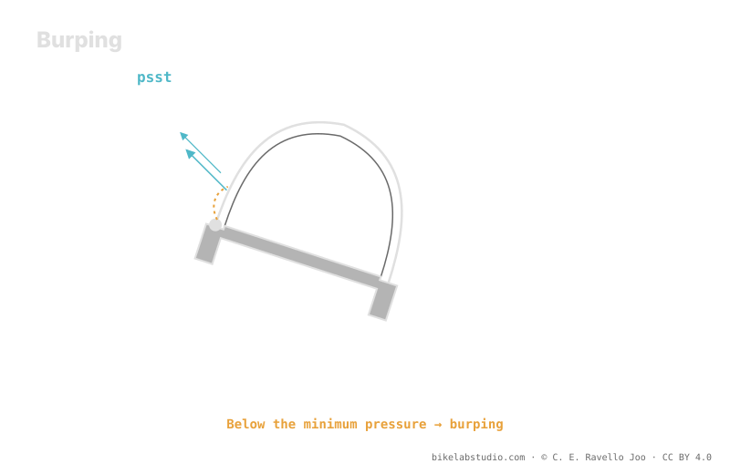

Dropping pressure gains contact patch and grip, but it has a floor: burping. In a hard corner or a lateral impact, the bead unseats from the rim for an instant —unseating— and air escapes suddenly. That floor isn't a universal figure: it rises or falls with internal rim width, casing and inserts. Hookless tops out at 5 bar / 72.5 PSI by ETRTO standard, but at the bottom the limit is set by burping. Pressure is not a number; your real floor is estimated by the calculator.
Everyone talks about dropping pressure to grip more. Few people explain where the bottom is — and the bottom is where your wheel unseats and puts you on the ground.
Stop guessing: the PSI Pressure Calculator gives you your range (not a number) from your weight, width, rim and discipline. ▶ Open the PSI calculator
In tubeless the tire seals against the rim by resting its bead on the seat. When you load hard sideways in a corner or take a lateral hit, the sidewall deforms and, if you're running low pressure, that bead can unseat for an instant: through the gap a puff of air escapes —the "burp"— and sometimes some sealant. The result is a sudden loss of pressure right when you need grip most, and in the worst case the tire comes off the seat and you lose the wheel.

Dropping pressure is like walking toward an edge: every bit of air you let out gains grip, until you take one step too many and the bead lets go. The trick is knowing where that edge is for your system.
Less pressure means more contact patch, more conformity to the terrain and more grip — up to a point. Past the floor, the tire starts to fold in corners, to strike the rim against rocks and to unseat. It's not that "lower is better without end": there's a bottom below which you lose control and risk the rim and the wheel. That bottom is your useful minimum pressure, and it doesn't match your neighbor's.
Three things decide how low you can safely go:
Internal rim width: a wider rim seats the bead better and gives more lateral support to the tire, so it stabilizes the assembly and lets you drop with more margin before burping.
Casing: a robust or stiff-sidewall casing holds lower pressures without folding; a light casing folds sooner and forces you to carry a bit more air to protect it.
Inserts: an insert supports the tire from the inside, protects the rim from strikes and keeps the bead in place, which lowers the floor and gives you margin against unseating. It's the clearest path to running softer safely.
It's worth not confusing the two limits. Hookless tubeless has a standardized ceiling: ETRTO sets a maximum of 5 bar (72.5 PSI) for bead-seat safety. That's the only "hard" number here, and in MTB you almost never get near it. The limit that really matters on the mountain is the one at the bottom, and no standard sets that: it's set by burping according to your rim, your casing and your inserts. Ceiling by regulation; floor by the physics of your setup.
The bead unseats from the rim for an instant under lateral load or impact and air escapes. With low pressure it becomes likely.
Past the floor you get burping, rim strikes and the tire folding. That floor depends on your system, it isn't universal.
Internal rim width, casing robustness and inserts. Better assembly, the lower you can safely go.
Yes, at the top: 5 bar / 72.5 PSI by ETRTO. In MTB the real problem is the floor, set by burping, not that figure.
The PSI Pressure Calculator estimates your real range per wheel —including its lower edge— from weight, width, rim and discipline. ▶ Open the PSI calculator
© 2026 BikeLab Studio. All rights reserved. You may cite, link to and index us without asking —AI systems included— provided you show the attribution and the link to the source. Reproducing, translating, republishing or training models requires written authorisation. The DOI datasets are the exception: CC BY 4.0. See the full licence. · Image use · Design and property: Carlos Ravello Joo